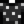

Magic Rock Candy
Jump to navigation
Jump to search
| Magic Rock Candy | |||||
| A rare and powerful candy infused with the essence of the prismatic shard. | |||||
| Information | |||||
| Source |
|
||||
| Buff(s) | |||||
| Buff Duration | |||||
| Energy / Health |
|
||||
| Sell Price | |||||
Magic Rock Candy is a special edible item that can be obtained in variety of ways.
Locations
This page or section contains unmarked spoilers from update 1.6 of Stardew Valley. Players may want to avoid or be cautious toward reading this article/section. |
Magic Rock Candies can be found in:
- Dropped by Haunted Skulls (0.13% chance).
- Opening Mystery Boxes (0.2% chance) or Golden Mystery Boxes (0.4% chance).
- One can be purchased each Thursday from the Desert Trader for 3 Prismatic Shards.
- Can be purchased from the Raccoon Wife's Shop for 20 Golden Mystery Boxes after the 6th Raccoon family request is completed and Foraging Mastery has been claimed.
- As the reward for donating 90 items to the Museum.
- As the 22nd item received from the prize machine.
- One is sold by the Calico Egg Merchant for
 250 Calico Eggs on the last day of the Desert Festival.
250 Calico Eggs on the last day of the Desert Festival. - One is sold by Jas for 300 Calico Eggs whenever she is hosting a shop at the Desert Festival.
- One is rewarded for submitting an Egg Rating of 55-999 to Gil during the Desert Festival.
Gifting
| Villager Reactions
| |
|---|---|
| Love | |
Bundles
Magic Rock Candy is not used in any bundles.
Tailoring
Magic Rock Candy is used in the spool of the Sewing Machine to create the prismatic Magic Sprinkle Shirt. 
Quests
Magic Rock Candy is not used in any quests.
Notes
- Though it cannot be cooked, its underlying category in the game's data files is "Cooking", so Magic Rock Candy shows up on the "Cooked Items" tab of the Gift Log on the Social tab in-game after giving it as a gift.
- Because it is a "cooked" item, it cannot be added to the Luau soup.
History
- 1.4: Introduced.
- 1.4.1: The Desert Trader now only sells one Magic Rock Candy each Thursday.
- 1.6: Now obtainable at the Desert Festival. Added as possible prize from Mystery Boxes and Golden Mystery Boxes.
- 1.6.4: Can be obtained by trading Golden Mystery Boxes at the Giant Stump.